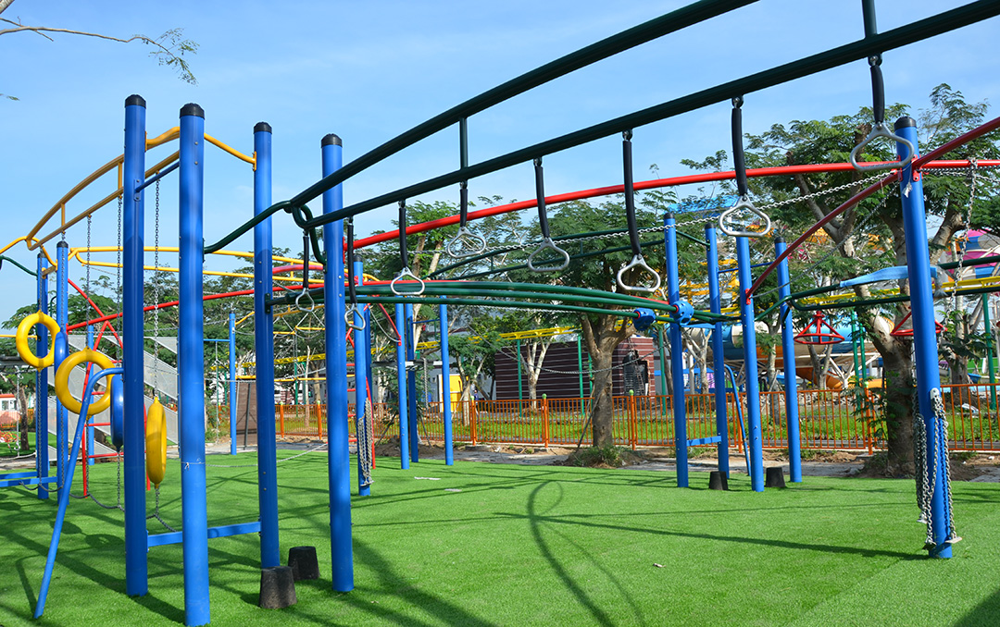

Merciado – Thrilling and Mysterious
Many people dream of visiting and playing at Disneyland or Universal in Western countries. However, we have no need to go there, Merciado the largest and most modern Amusement Park in Mekong Delta based on the ancient European architecture
Address: 01 Ly Tu Trong Street, Ninh Kieu County, Can Tho City, Viet Nam.
In the 20 hectares of Can Tho University campus III, Merciado has been designed as a modern amusement park. It will offer visitors great experiences with a variety of visiting areas and suitable games for various ages such as children, teenagers, adults and so on. Therefore, people can come here and have a lot of fun.
As soon as coming into Meriado Amusement Park, visitors will be overwhelmed by the classic European landscape, especially the impressive and fairytale European gate.

In the Walking Street named Olympus Street, you can visit and buy typical souvenirs of Merciado. The Walking street is also a place where visitors can immerse themselves in the fairy space with many special performances such as street parades (re-enacting fairy tales like Snow White, Cinderella, Beauty and the Beast, Mermaid, Aladin, Tangled, etc.), aerial performances, mascot performances, and so on.
At the Square of Love (Eros Square), you can enjoy yourselves, watch, have fun and contemplate the statue of love. Additionally, young people in love can express their eternal love by carving the name of their lover into the beautiful lock which can stay there for a long time
Let’s enjoy the panorama of the park and surrounding areas by being on the top of the Arc of Olympus.
In addition to the buildings with European architecture and fresh air which is quite suitable for resorts, Meriado Amusement Park particularly attracts visitors with modern and thrilling game system reaching international safety standards. For those who like adventure and thrill, Dragon Flight Roller Coaster, Head Spin, or Viking Voyage will delight them.
For those who do not dare to try thrilling games, other games such as Carousel, Jumping Jellyfish, Air Cycles, indoor games will truly bring you enjoyable and comfortable moments.
If you are a fan of the Sasuke TV show or simply love action games, you cannot miss Royal Playground with many exciting games such as Slippery Snake Swing, Spinning Kites, Eagles nest, etc. This is an adventurous action game zone that has never been built in any other parks in Vietnam.
Located in the modern, high-ranking entertainment zone, Water Park with many modern, newest, thrilling water games such as Wild Whirlpool, Cyclone Splash, etc. will bring a unique experience for visitors.
The highlight of Meriado Amusement Park is Coeus Castle, where visitors can enjoy their time with a collection of ancient mythological Greek statues, solid walls, and royal-style interiors. Coeus Castle is also the place where special performances are organized every night, you can totally immerse yourselves in the fairyland world.
Let’s come to Amusement Merciado for fun, exploration and enjoyment.